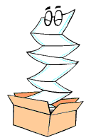

Impresion doble cara
Es la impresión que se realiza utilizando ambas caras de una hoja de papel, también llamada impresión Dúplex.
Ventajas
Genera menos impresiones.
contribuyes con el medio ambiente.
Disminuye costos.
